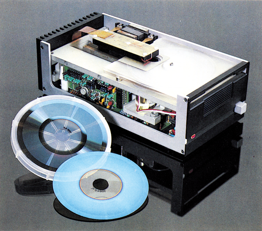
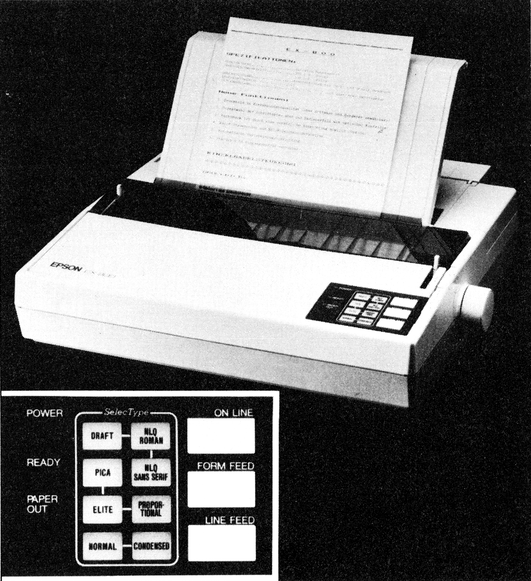
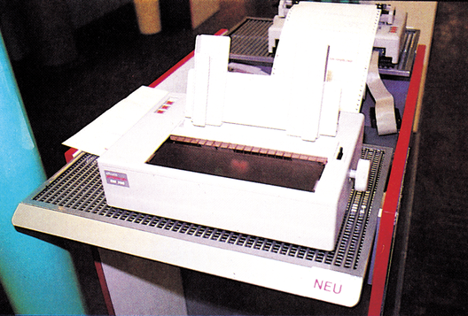
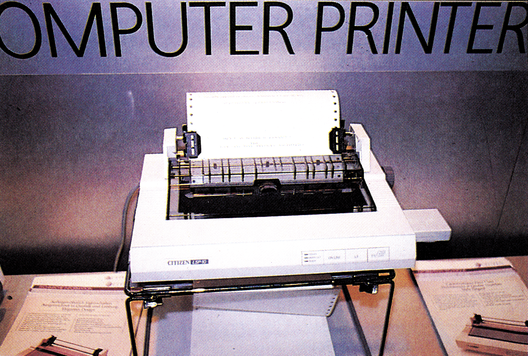
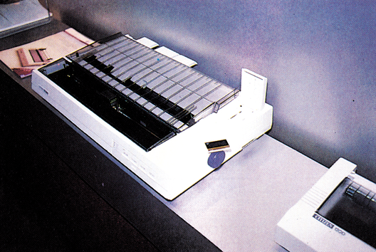
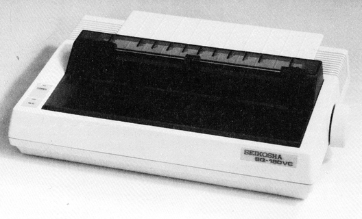

CeBIT-Messe: Wohin geht die Entwicklung?
Viele Innovationen waren auf der CeBIT zu bestaunen. Sowohl Computer, Software und Zubehör unterliegen einer ständigen Weiterentwicklung. Vieles, was vor wenigen Jahren nur in theoretischer Fbrm existierte, wurde in die Praxis umgesetzt; zu erschwinglichen Preisen. Lesen Sie, was in Zukunft auf uns zukommt!
Eine Weltneuheit, die den gesamten Markt von Massenspeichern revolutionieren könnte, wurde von Kodak/ Verbatim auf der CeBIT vorgestellt.
Drei Buchstaben: T.M.O. Sie stehen für Thermo-Magneto-Optical. Dahinter verbirgt sich eine neue Techik für die dauerhafte Datenspeicherung. Wichtigstes Merkmal: Auf einer gerade handtellergroßen Scheibe lassen sich 100 MByte an Daten speichern. Um 100 MByte im 1541-Format speichern zu können, sind etwa 600 Disketten nötig! Dabei hat sich, bis auf die Größe, für den Benutzer nicht viel geändert: Die Daten sind les-, schreib- und löschbar, das Speichermedium beliebig austauschbar. Man kann die Speicherplatten also mit Freunden tauschen; sie sind nicht, wie eine Harddisk, an einen Computer gebunden.
T.M.O. — Speicher der Zukunft
Jetzt bleiben nur noch drei Fragen offen: Wann kommen die TM.O.-Speicher (Bild 1) auf den Markt, wieviel werden sie kosten und wie funktioniert ein T.M.O.-Speicher überhaupt?

Zur ersten Frage: Auf der CeBIT zeigte die Entwicklerfirma Verbatim einen Prototypen, der dort seit mehreren Monaten fehlerfrei funktioniert. Die ersten Auslieferungen von seriengefertigten Mustern sollen 1987 erfolgen, Endverbraucher sollen spätestens ein Jahr später beliefert werden.
Neben der sensationellen Zahl von 100 MByte kann auch der geplante Preis überzeugen: Als ungefähre Vorstellung werden 300 Dollar (um die tausend Mark) für ein TM.O.-Laufwerk genannt.
Die Funktionsweise des T.M.O. ist relativ einfach. T steht für Thermo: Die Daten werden mit Hitze geschrieben. M steht für Magnetisch: Die Daten werden, wie bei einer normalen Diskette, magnetisch gespeichert. O steht für Optisch: Die Daten werden optisch gelesen.
Als Datenträger dient eine durchsichtige Platte, die hauchdünn mit einer magnetischen Schicht überzogen ist. Diese Platte wird einem schwachen Magnetfeld ausgesetzt, das aber nicht ausreicht, die Magnet-Partikel »umzupolen«. Mit einem Laserstrahl wird die Platte nun an einem sehr kleinen Punkt auf ungefähr 200 Grad Celsius erhitzt. Bei so hohen Temperaturen reicht das Magnetfeld aus, die Magnete des Datenträgers neu auszurichten. Durch die punktförmige Erhitzung kann die Datendichte gegenüber einem konventionellen magnetischen Speicher stark gesteigert werden.
Das Lesen der Daten erfolgt ebenfalls mit einem Laser. Die ausgerichteten Magnete auf der Platte haben die Eigenschaft, einen Lichtstrahl auf besondere Art und Weise zu verändern. Diese Veränderungen können mittels Fotozellen abgetastet werden. Die Magnete drehen nämlich die Polarisationsrichtung des Lichts.
In der weiteren Entwicklung soll die Datendichte ohne weiteres auf 150 MByte erhöht werden können; außerdem will man die Disketten auch doppelseitig nutzen, um auf eine Kapazität von 300 MByte zu kommen.
Die hohe Speicherkapazität, die Wechselbarkeit, die Löschbarkeit und der relativ niedrige Preis machen die TMO.-Technik
nicht nur zum ernsten Konkurrenten für Harddisks, sondern auch für die normalen Disketten. Gerade in Hinblick auf die neuen 16-Bit-Computer sind die T.M.O.-Speicher eine Technik, der die nähere Zukunft gehören könnte.
(bs)Verbatim GmbH, Frankfurter Str. 63-69, 6236 Eschborn
Das Thema der Zukunft: DFÜ
Datenfernübertragung wird von vielen noch belächelt. »Das ist doch nur eine Sache für Hacker!« ist eine weitläufige Meinung. Doch wer sich auf der CeBIT in Halle 1, 6 und 7 umgesehen hat, konnte leicht feststellen, daß dem nicht so ist: Datenfernübertragung wird sich in den nächsten Jahren zu dem Informationsmedium überhaupt entwickeln. Denn Datenfernübertragung ist mehr, als in Mailboxen zu wühlen. Vor allem im professionellen Bereich, in Firmen, Geschäften, Kaufhäusern und Universitäten spielt die Datenfernübertragung eine immer größere Rolle. Geht es in Firmen und Universitäten um einen schnellen Datenfluß von einem Ort zum anderen, können Geschäfte wie Reisebüros ihre Kunden mit den neuesten Daten versorgen. Welche Zimmer sind in einem bestimmten Hotel noch frei, haben sie ein Bad oder gibt es noch eines mit Blick aufs Meer.
Als ein Trend war deutlich zu erkennen, daß Btx eine Teilnehmersteigerung verzeichnen wird. Inzwischen hat man erkannt, welche Leistungen in diesem Informationssystem stecken und wie es sich nutzbringend einsetzen läßt.
Die zwei interessantesten Innovationen in Sachen Btx, die vorgestellt wurden, sind einmal die Multitels wie das Dialog 1000 von der Deutschen Fernsprechergesellschaft und das Bitel der Firma Siemens. Das Bitel ist ein kombiniertes Btx-Terminal und Komforttelefon. Es hat einen Schwarzweiß-Monitor, der für die meisten Heim- oder Schreibtisch-Anwendungen ausreicht. Siemens vermietet das Bitel für eine monatliche Gebühr von etwa 90 Mark. Farbe bringt das Multitel Dialog 1000 von der Deutschen Fernsprechergesellschaft auf den Bildschirm. Es soll, ohne Farbmonitor, unter 2000 Mark kosten. Die Post will eine größere Stückzahl der Multitels kaufen und für 40 bis 60 Mark pro Monat vermieten.
Mit den Multitels könnte Btx einen Aufschwung erleben. Denn die hohen Decoder-Preise halten heute noch die meisten Interessierten ab, sich einen Btx-Anschluß zu besorgen. Jeder fürchtet wohl, 2000 Mark auszugeben, die keinen Nutzen bringen. C 64-Besitzer haben auf der CeBIT vergeblich am Commodore-Stand nach dem Btx-Steckdecoder gesucht. Er ist noch immer nicht fertig und wurde deshalb der Öffentlichkeit nicht vorgestellt. Schwierigkeiten mit der Decoder-Software verhindern eine FTZ-Zulassung.
Noch keine Btx-Steckdecoder
Aber nicht nur Commodore hat Schwierigkeiten mit seinem Btx-Decoder, sondern auch die Firma Technofor, die in Halle 16 ihren Decoder vorstellte. Die Software des Technofor-Decoder, der schon vor einiger Zeit in Werbeanzeigen von Geschäften angeboten wurde, war auch nicht ganz ausgereift.
Viele Btx-Seiten konnten bei beiden Decodern nicht normgerecht dargestellt werden. Bei der Software-Entwicklung scheinen aber die Technofor-Programmierer die Nase vorn zu haben.
Häufig traten die Fehler dann auf, wenn der Decoder DRCS-Zeichen auf den Bildschirm bringen sollte. DRCS ist die Abkürzung für Dynamic Redefinable Charakter Set, also für den freidefinierbaren Zeichensatz. Über Btx kann man das Aussehen verschiedener Zeichen verändern und so gut aufgelöste Grafiken erzeugen.
Die Steckdecoder sollen einmal 600 bis 700 Mark kosten.
An den Ständen der Unterhaltungsbranche ließ sich feststellen, daß sich viele Fernseher-Hersteller nicht nur um Decoder für ihre Fernseher kümmern, sondern in neue Geschäftszweige drängen. Blaupunkt bietet so jetzt auch einen Software-Decoder mit Steckkarte für IBM-kompatible Computer an und einen IBM-PC-ähnlichen Btx-Computer. Einen solchen Computer gibt es inzwischen auch bei Loewe Opta. Vom Aussehen her ein reines Btx-Terminal, von den Funktionen her aber ein IBM-kompatibler PC.
Btx: Fernbedienung für Bildplatten-Spieler
Bei einigen Unterhaltungsriesen waren Btx-gesteuerte Bildplattensysteme zu bewundern. Diese Systeme dienen der anschaulichen Demonstration von Vorgängen und Artikeln, deren Beschreibung mit ständig wechselnden Daten verknüpft werden muß. Mit diesen Systemen, bekommen Sie in einem Reisebüro nicht nur sofort gesagt, welches Zimmer wann frei ist, sondern Sie können sich gleich einen Videofilm über das Hotel oder den Strand ansehen. Der Film wird bei Anwahl einer Btx-Seite automatisch über die Bildplatte gezeigt. Alle Bildplatten-Steuerungsbefehle werden nämlich zusammen mit den Btx-Seiten im Btx-Rechner der Post gespeichert. Fast alle Btx-Neuigkeiten hatten eines gemeinsam: Sie zielen ganz klar in den professionellen Bereich ab. Für private Anwender gab es eigentlich nur die bekannten Btx-Fernseher-Kombinationen zu sehen.
Neben der Industrie machte auch die Post kräftig Reklame für Btx. Aber nicht nur für Btx sondern auch für die Datex-Netze (wie Datex-P und Datex-L) und ISDN. Denn Datex-P ist ein immer interessanteres Kommunikationsmedium, wenn es um den schnellen Austausch von größeren Datenmengen geht.
Was noch in der Versuchsphase steckt, ist das Temex-Netz. Temex soll ein preisgünstiger Datenübertragungsmedium zur Fernüberwachung oder Steuerung von Maschinen werden. Vorstellbar wird mit Temex: Alarmüberwachung für Notsituationen, Ablesen von Zählern oder Meßgeräten, Schalten von entfernten Verbrauchern. Auch zur Informationsübermittlung, wie für Parkleitsysteme oder Verkehrsstrom-Regelungssystemen, könnte Temex eingesetzt werden.
ISDN — das Kommunikations-Netz des 21. Jahrhunderts
Wegen der ständig steigenden Informationsdichten auf den Telefonnetzen soll noch 1988 das ISDN (Integrated Services Digital Network) -Netz eingeführt werden. ISDN ist ein digitales Datenfernübermittlungs-Netz in dem einmal Dienste wie Btx, Datex, (Bild-) Telefon, Telex, Teletex zusammen geführt werden sollen. Statt vieler Einzeldienste will man mit ISDN ein Gesamtsystem aufbauen, dessen Aufbau kostengünstiger und der in Praxis einfacher handzuhaben ist, als die momentane Vielzahl von Einzelnetzen. Das soll soweit führen, daß man statt einer einfachen Telefonbuchse einen ISDN-Basisanschluß in Haus gelegt bekommt, an den Multifunktionsterminals angeschlossen werden können. Für den Basisanschluß soll das normale Telefon-Kabel ausreichen.
Ganz deutlich war auf der Ce-BIT die Tendenz zu spüren, daß DFÜ eine immer wichtigere Bedeutung in unserem Leben bekommen wird. In einigen Jahren wird durch die ständig leistungsfähigeren Computer eine Datenflut erreicht werden, die nur noch elektronisch überblickt werden kann. Die neuesten Informationen bekommt man dann nicht mehr zuerst in schriftlicher Form, sondern sie werden erst einmal in Datenbanken, die per DFÜ abgefragt werden können, bereitstehen.
(hm)Info: Technofor, Adalbert-Stifter-Ring 21, 8026 Ebenhausen, Tel. 0 8178/35 31 Commodore, Lyoner Str. 38, 6000 Frankfurt 71, Tel. 0 69/66 38-0
Blaupunkt, Robert-Bosch-Str. 200, Postfach, 3200 Hildesheim, Tel. 0 5121/49-1
Löewe Opta, Brennaborstr. 13, 4600 Dortmund 76, Tel. 02 31/6 55 03-24
Siemens, Hofmannstr. 51,8000 München 70, Tel. 0 89/7 22-6 33 45
Sony, Hugo-Eckner-Str. 20,5000Koln 30, Tel. 02 21/59 66-4 57
Deutsche Fernsprechergesellschaft, Frauenbergtorstr. 35, Postfach 12 40, 3550 Marburg, Tel. 0 64 21/4 02-2 59
Drucker auf der CeBIT '86
Es war schon interessant. Was? Natürlich die neuen Drucker auf der CeBIT. Fast jeder Druckerhersteller konnte mindestens mit einem neuen Modell glänzen. Da gab es Utopisches, aber auch durchaus Realistisches zu sehen. Utopisch aber gut waren zum Beispiel die Laserdrucker, die trotz Preissenkung nicht unter 10000 Mark erhältlich sind. Oder die LCD-Drucker (bei denen die Belichtungssteuerung des Papiers durch eine Flüssigkristall-Blende gesteuert wird), die sich als Nachfolger der Laser-Drucker sehen und mit einer kaum noch zu überbietenden Druckqualität und Geschwindigkeit bei niedrigstem Geräuschpegel aufwarten können. Netter Nebeneffekt: Zukünftige Drucker werden nicht nur drucken, sondern auch fertige Texte einlesen können und wie ein Fotokopierer beliebig oft vervielfältigen. Abgesehen davon sticht das wachsende Interesse auch am kleineren Kunden ins Auge. Während man noch vor zwei Jahren kaum einen Drucker finden konnte, der aus der Sicht des Herstellers zum C 64 paßte, so wirbt heute fast jeder Druckererzeuger mit dem Schlagwort »passend zum C 64«. Klar — für ihn ist es gleichgültig, ob er seinen Drucker an einen IBM-Kunden oder an einen C 64-Kunden verkauft, nur mit dem Unterschied, daß es wesentlich mehr C 64 als IBM-PCs gibt. Doch gehen wir durch die Hallen und sehen uns um: Bei Epson hat man, eher leise, aber um so bedeutender, den Schritt zur Tintenstrahltechnik gewagt. Nachdem man nun Tintendüsen einsetzt, die nicht mehr austrocknen können, scheint der weiteren Verbreitung dieser Drucker, namentlich dem IX-800, nichts mehr im Wege zu stehen. Ganz besonders auffallend beim IX-800 (zirka 2300 Mark) ist die sehr saubere Schrift, die Druckgeschwindigkeit und natürlich das Nichtvorhandensein einer Geräuschuntermalung. Trotzdem vernachlässigt Epson nicht den Matrixdrucker-Markt. Mit dem EX-800 (Bild 2) wurde der vorläufige Höhepunkt der 9-Nadel-Drucker vorgestellt (zirka 2100 Mark). Der EX-800 druckt bis zu 300 Zeichen schnell, kann auf Farbe aufgerüstet werden und läßt sich durch 11 Tastenkomfortabel programmieren. Eine gewaltige Überraschung bescherte Computerriese Olivetti. War man bisher hauptsächlich gute, aber teure Geräte gewohnt, so hat Olivetti nun eine vollkommen neue Druckerlinie aufgebaut. Diesem Druckersortiment sollte man Aufmerksamkeit schenken, denn es ist quasi »für jeden etwas« dabei, denn es gibt bereits Modelle ab 650 Mark (TH 700/1 mit 24 Thermo-Elementen). Die Modellreihe der Nadel-Matrixdrucker beginnt mit dem DM 100/1 (Bild 3) bei 800 Mark (120 Zeichen/Sekunde) und geht über das Modell DM 105/1, das sogar farbig drucken kann (900 Mark), bis zum 24-Nadeldrucker für knappe 4000 Mark. Die gesamte Palette von Olivetti erstreckt sich dabei über insgesamt 30 Drucker, von denen alleine 18 in der Preisregion unter 2000 Mark angesiedelt sind. Fast alle Drucker dieser Preisklasse besitzen 18 Nadeln und beherrschen den Farbdruck.


Aber auch bei Firmen, die bereits durch mehrere preiswerte Drucker bekannt geworden sind, gab es Neues zu sehen. Melchers präsentierte den längst fälligen Nachfolger des CP 80X, nämlich den CPA 80X, der trotz annähernd gleich gebliebenem Preis (898 Mark) die Leistungen des Vorgängers erheblich übertreffen soll. Drucker-Neuling Citizen hat mit dem neuen LSP 10 (Bild 4) eigentlich nur etwas »Gehäusekosmetik« beim 120D vorgenommen, denn innerlich gleichen sich beide Drucker auffallend. Der erhöhte Richtpreis des LSP 10 von 1098 Mark gegenüber 998 Mark beim 120D scheint dafür allerdings etwas gewagt. Außerdem konnte man den Prototyp der MSP-Nachfolgeserie (oder Ergänzungsserie?) betrachten (Bild 5). Zwar war dieser Prototyp noch nicht voll funktionsfähig, deutete aber schon offensichtlich auf eine völlige Neuigkeit hin: eine Druckersteuerung durch ROM-Karten im Scheckkartenformat. Eine denkbare Verwendung dieser Karten könnten verschiedene Steuerbefehle oder Zeichensätze sein. Etwas ähnliches konnte man bei Kanematsu Goshu, dort allerdings funktionsfähig, beim DP 2010 sehen. Der DP 2010 (1690 Mark) ist der Nachfolger des DP 165, der bislang von RFI-Elektronik in Deutschland vertrieben wurde. Ganz besonders spannend wurde es auf dem Seikosha-Stand, denn es ging das Gerücht um, dort stünde im Hinterzimmer eine Drucker-Sensation für den Preisbereich bis 1000 Mark. Nach kurzem Überredungsgespräch durfte man dann auch das kleine Wunder, das sich SP 180 VC (Bild 6) nennt, inspizieren. Der SP 180 VC macht für seinen Preis einen erstaunlich soliden Eindruck, ist für einen Drucker ausgesprochen schön, kann direkt an den C 64/C 128 angeschlossen werden und beherrscht sogar die NLQ-Schrift. Am erstaunlichsten ist der Preis, der mit 599 Mark so ziemlich alles bisher dagewesene in dieser Leistungsklasse in den Schatten stellt. Glänzende Augen der Besucher und trübe Blicke der Konkurrenz verursachte der NL-10 auf dem Star-Stand. Die geballte Druck-Power, die in diesem Drucker zu einem Preis von 1145 vereinigt ist, darf wohl als Messe-Sensation gelten. Einen ausführlichen Test dieses Druckers fanden Sie bereits in der Ausgabe 4/86.



Mit einer kompletten Farbausstattung stellte sich der CItoh C 310 C vor. Natürlich druckt der C 310 C auch schwarzweiß in exzellenter NLQ-Schrift. Zusammen mit der Farboption kostet dieser Drucker 2498 Mark. Obwohl der Okimate 20 schon immer ein farbiger Geselle war, gibt es ihn nun sogar in einer Btx-Version mit bis zu 128 Farben. Damit dürfte der Okimate 20 einer der preiswertesten Btx-Drucker auf dem Markt sein. Der neue ML 292 (1989 Mark) von Oki hat gleich 18 versetzt angeordnete Nadeln, mit denen er ein ansprechendes Schriftbild produziert. Auch Brother scheint nun die Macht des Heimcomputer-Marktes entdeckt zu haben und zeigte den M-1109 in einer vollkommen an den C 64 angepaßten Version vor. Besonders auffallend beim M-1109 ist das, bei den größeren Modellen sogar mit der »Guten Industrieform« ausgezeichnete Gehäuse-Design. Abgesehen davon orientieren sich die Leistungen des M-1109 eher am guten Mittelfeld dieser Preisklasse (bis 1000 Mark). Wer sich für Drucker interessiert, fand in der CeBIT seine Messe. Es hat sich gezeigt, daß gerade dieser Markt noch wesentlich pulsierender ist als der Computermarkt selbst. Das ist verständlich, wenn man bedenkt, daß bei Druckern noch ein riesiger Nachholbedarf, beziehungsweise Ersatzbedarf für veraltete Modelle besteht. Wer glaubte, daß es außer dem Schriftbild nichts mehr gäbe, was sich an Druckern verbessern ließe, wurde wohltuend überrascht. Aber darüber werden wir in den nächsten Ausgaben in Form von ausführlichen Testberichten informieren.
(aw)Info: Epson Deutschland, Zülpicher Str. 6, 4000 Düsseldorf 11, Tel. 0211/56 0310
Deutsche Olivetti, Lyoner Str. 34, 6000 Frankfurt 71, Tel. 0 69/6 69 21 Sylenec (Citizen), Postfach 151727, 8000 München 15, Tel. 0 89/517 90
Okidata, Emanuel-Leutze-Str. 8, 4000 Düsseldorf 11, Tel. 0211/49 79 41 Star-Micronics, Frankfurter Allee 1-3, 6236 Eschborn/Ts., Tel. 0 6196/7 0180
Microscan (Seikosha), Überseering 31, Postfach 6017 05, 2000 Hamburg 60, Tel. 0 40/6 32 00 30
C.Itoh, Roßstr.96, 4000 Düsseldorf 30, Tel. 0211/45 49 80